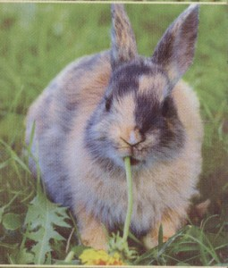

V červenci 2008 vyfotografovali amamští ochránci přírody divokou kočku, jak nese mrtvolu králíka. To vyústilo v diskusi o lepších způsobech, jak kontrolovat domácí zvířata. Byly provedeny pokusy obnovit stanoviště králíka japonského (amamského), ale ten vyžaduje, aby se v jejich těsné blízkosti nacházel jak dospělý, tak mladý les. Nestačí obnova mladého lesa bez toho, aniž by poblíž byl dospělý les. Je nepravděpodobné, že jej tento králík osídlí.
Návrh na zachování králíka zahrnuje obnovu přírodních stanovišť a kontrolu populace predátorů. Na jižním konci ostrova Amami jsou dospělé a mladé lesy v rovnováze, z čehož vyplývá, že by se měla chránit právě tato oblast.V roce 1990 navrhl specialista na zajícovce z Mezinárodního svazu ochrany přírody plán ochrany.[20] V roce 1999 bylo založeno na ostrově Amami Amamské Centrum ochrany přírody ministerstva životního prostředí, které v roce 2004 označilo králíka amamského za ohrožený druh.
